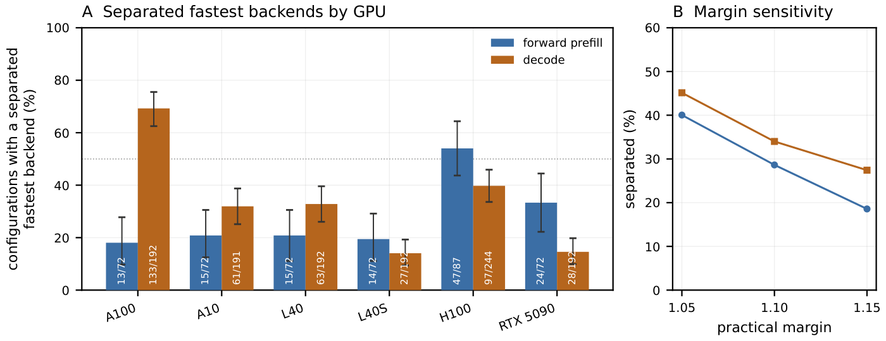
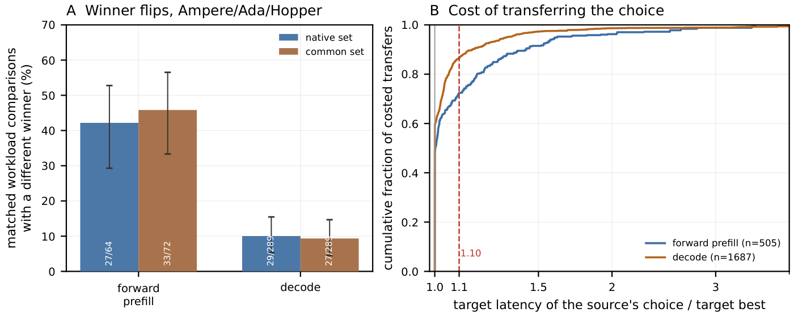

ML SYSTEMS · GPU INFERENCE
Attention Kernel Portability Across GPU Architectures
Measuring whether an attention backend chosen on one GPU stays a good choice on another, for forward prefill and single-token KV-cache decode, under one software build.
Contents
Overview
We benchmarked forward-prefill and single-token KV-cache attention across six NVIDIA GPUs spanning four architecture families and five compute capabilities. A fastest backend met both the 10% practical margin and the bootstrap separation criterion in 128 of 447 forward-prefill configurations and 409 of 1203 decode configurations. Among eligible Ampere/Ada/Hopper comparisons the selected backend changed in 27 of 64 prefill comparisons and 29 of 289 decode comparisons. Median transfer latency ratios were close to 1 (1.002 prefill, 1.000 decode), but the upper tails showed larger penalties (1.61 and 1.32 at the 95th percentile). No eligible target timing existed for 85 of 590 prefill and 287 of 1974 decode source choices. These results describe the tested workloads and software environments; they do not isolate GPU architecture from host and driver differences.
The question this sweep was built to answer is narrow: if a serving stack picks one attention implementation on the hardware it was tuned on, how much does that choice cost on a different part, and can the measurement even tell.
| Question | Measurement | Section |
|---|---|---|
| Did the kernel that was requested actually run? | Per-row dispatch probe of the observed kernel flow, with an explicit unprobed category | Validity before performance |
| Is a latency difference real? | Bootstrap CI on the median plus a 10% practical threshold; cells failing either are unseparated | Portability |
| Does the fastest implementation carry across devices? | Winner flip rate per device pair, raw and restricted to separated cells, with both denominators | Portability |
| What does a fixed choice cost? | Source-to-target transfer latency ratio: the target’s time for the source’s chosen backend over the target’s own best | Portability |
Experimental setup
Six GPUs spanning four architecture families and five compute capabilities. Bandwidth is a copy benchmark measured in-process on that host, not a vendor figure.
| GPU | Architecture | CC | SMs | Memory (GB) | L2 (MB) | Bandwidth (GB/s) | Repeats | Driver | Commit |
|---|---|---|---|---|---|---|---|---|---|
| A100 | Ampere | sm80 | 108 | 85.1 | 41.9 | 1733 | 5 | 595.71.05 | decode 468b9a55, prefill 91959d34 |
| A10 | Ampere | sm86 | 72 | 23.7 | 6.3 | 483 | 5 | 595.71.05 | decode 468b9a55, prefill 91959d34 |
| L40 | Ada | sm89 | 142 | 47.7 | 100.7 | 644 | 2 | 595.71.05 | 91959d34 |
| L40S | Ada | sm89 | 142 | 47.7 | 100.7 | 644 | 5 | 570.124.06 | 91959d34 |
| H100 | Hopper | sm90 | 132 | 85.0 | 52.4 | 2980 | 5 | 580.126.09 | 91959d34 |
| RTX 5090 | Blackwell | sm120 | 170 | 33.7 | 100.7 | 1518 | 5 | 580.173.02 | 91959d34 |
The grid has two regimes. Prefill runs batch 1, 4, 16 against sequence lengths 256, 512, 1,024, 2,048, 4,096, 8,192 at head_dim 128, bf16, fwd only; the figures below hold batch at 4 unless a control says otherwise. Decode is a single-token append against a KV cache of length 512, 1,024, 2,048, 4,096, 8,192, 16,384 at batch 1, 8, 32, 64, head_dim 128, bf16, with 8 KV heads in the main slice and 32 KV heads used only for the grouped-query comparison. 16 implementation ids were measured, collapsing into seven backend families, and 73,230 timed rows were collected in total.
How a winner is decided, and what a transfer costs
Two definitions carry every number on this page.
A backend counts as the winner of a configuration only if it is the fastest backend meeting the 10% margin and the confidence criterion: the runner-up is at least 10% slower, and the lower bound of a 95% bootstrap interval on that ratio is above 1. Writing for the median of per-launch median latencies on GPU , configuration , backend , and for the fastest and second-fastest:
In words: the second-fastest backend must be at least 10% slower, and the lower end of a 95% bootstrap interval on that ratio must still exceed 1. A configuration failing this rule has not been shown to have equally fast backends; it is one where no fastest backend could be established.
The second question is what it costs to carry GPU ‘s choice over to GPU on the same workload:
In words: 1.20 means the source GPU’s pick takes 20% longer than the fastest backend actually measured on the target. Where the source’s pick has no eligible timing on the target the ratio is undefined, and those cases are counted separately rather than filled in with the target’s own best.
Main results
A winner-change rate is interpretable only with its denominator and its separation criterion attached, so both are given with every rate below.
Of 1,650 GPU/configuration observations, 28.6% of 447 forward-prefill and 34.0% of 1203 decode have a winner separated from second place by both the bootstrap lower bound and the 10% practical margin. In the remainder the separation criterion was not met, which is not the same as the backends being equal. The restricted rate, computed over separated configurations only, is the number to read.

Most configurations have no separated fastest backend. The criterion is met on 128 of 447 forward-prefill and 409 of 1203 decode configurations, pooled across six GPUs. No device clears half in both regimes.
Workload counts differ by GPU, so the bars describe the configurations each device measured. Failing the criterion does not establish that the backends are equally fast.

Winners change more often in forward prefill than in decode. Over the five Ampere, Ada and Hopper GPUs, 27 of 64 separated forward-prefill comparisons change winner against 29 of 289 in decode.
A changed winner usually costs little at the median. Transferring the source GPU’s choice costs a median 1.002x in prefill and 1.000x in decode, with 95th percentiles of 1.61x and 1.32x. 85 of 590 prefill and 287 of 1974 decode source choices had no eligible target timing and are counted separately; they have no measured target latency to compare.
Prefill
Prefill is compute-shaped and commit-homogeneous: every prefill row in this sweep was analysed at commit decode 468b9a55, prefill 91959d34, so a difference between prefill panels is a difference of device and driver, not of harness version.
On H100 at N=8,192, FlashAttention-3 runs at 3,311 us against 3,663 us for cuDNN-backed SDPA, 4,510 us for the local Triton kernel, 6,634 us for FlashAttention-2 and 7,139 us for flash-backed SDPA. The lead over second place is 10.6%, which clears the 10% practical threshold; most cells in this grid do not.
The ordering inverts at short sequence length. At N=256 on the same device cuDNN-backed SDPA takes 36.2 us and FlashAttention-3 takes 84.13 us, with FlashAttention-2 at 181.3 us and the Triton kernel at 291.6 us. At this length the four are separated by tens of microseconds, which is small relative to the fixed per-call work these measurements include.
On A10 at N=8,192 the local Triton kernel is fastest at 32,160 us, against 32,270 us for cuDNN-backed SDPA and 42,790 us for FlashAttention-2, a lead of 0.4% over second place. That sits well inside the 10% threshold, so on this cell the two are not separated and the ranking should not be used to choose between them.
The reference path is a memory result, not a FLOP result. On H100 at N=4,096 it takes 36,610 us against 1,083 us for cuDNN-backed SDPA, and its peak memory is 21,070 MB against 706 MB for FlashAttention-2. The fused kernels avoid materialising the score matrix and the traffic that goes with it; they still perform the quadratic arithmetic that exact attention requires.
Normalising against one baseline makes the shape of the win clearer, and the absolute latency is carried in every cell so that a large ratio on a small absolute number cannot be mistaken for a large saving.
The largest speedup in the grid is cuDNN-backed SDPA on L40S at batch 1, N=256: 2.31x, which is 54.28 us against 125.5 us. The ratio is large and the saving is 71.23 us per call, which is why no ratio on this page appears without its microseconds.
The worst cell is the reference path on L40S at batch 1, N=8,192: 0.028x, or 121,200 us against 3,335 us. That is the cost of materialising scores at long sequence length, and it sets the scale the colour ramp has to be clamped against.
FlashAttention-3 reaches 2.48x on H100 at batch 1, N=2,048 (94.98 us against 235.2 us), and it appears on no other panel: 3,204 of its 3,999 rows are
UNSUPPORTEDbecause the build declines pre-Hopper parts. It is a Hopper result, not a portable one.
Decode
Single-token decode does very little arithmetic and reads the whole cache, so the useful model is bytes rather than FLOPs. The KV-cache footprint, an idealised one-read byte count for a decode step, is
with the batch, the number of KV heads, the KV length, the head dimension, the bytes per element (2 for bf16), and the leading factor 2 counting the K and V tensors. Effective KV bandwidth below is that byte count divided by measured time. It is calculated, not read from a profiler, and the byte count differs between backends that expand the KV cache and those that read it natively, so compare a backend against itself across shapes rather than against another backend at one shape.
We measured decode both with and without CUDA Graphs. A decode kernel runs for tens of microseconds, so the per-call cost of launching it is a real fraction of the measurement; replaying a captured graph removes most of that launch cost. The figures below use execution without CUDA Graphs, hereafter eager, and each comparison uses the same execution mode on both GPUs.
The A10 and A100 decode rows were collected under a different harness revision and driver than the H100 and L40 rows, so a panel-to-panel change mixes hardware with software version and cannot be attributed to architecture alone. Prefill has no such split.
Loading measurements…
Decode rows for A10 and A100 were collected under a different commit and driver than H100 and L40, so the panels are not a controlled cross-GPU comparison.
At batch 1 on H100 the FlashAttention KV-cache path is nearly flat in KV length, moving from 102.1 us at N=512 to 103.8 us at N=16,384, a factor of 1.02x across a 32x increase in cache length. At that batch the step is dominated by fixed cost rather than by cache traffic.
FlashInfer takes the opposite shape at batch 1 on H100: 78.13 us at N=512, the fastest entry there, rising to 859.7 us at N=16,384, which is 8.28x the FlashAttention path at the same point. The crossover between the two libraries sits inside the measured range, so a single-token serving path picks a different winner at short and long context on one GPU.
At batch 32 the ordering changes again. On H100 at N=16,384 the FlashAttention KV-cache path takes 863.7 us, SDPA 932.1 us, FlashInfer 1,120 us and the reference 2,963 us. The FlashAttention path there moves 2,486 GB/s of modelled KV traffic against the 2980 GB/s measured copy-benchmark bandwidth, 83% of it under the analytic byte model.
The compiled decode path barely exists as a comparison.
D1-inductorproduced 194 clean rows against 5,346 declined, so its line covers a thin part of the grid and the points it does cover are not a general result fortorch.compileon decode.
- Each cell is the implementation with the lowest median latency at that batch and KV length;144 cells over 6 GPUs are shown, and 3 implementations (D2-sdpa, D3-fa-kvcache, D4-flashinfer) take at least one cell. Colour is the fastest median only. Over the full decode grid of 1203 cells,34.0% have a winner that both the bootstrap CI and the 10% practical threshold separate from second place, and the median winner leads by 6.2%. Most cells here have no separated winner, so a colour change between neighbouring cells is not by itself a real difference.
- Comparing panels mixes hardware with software snapshot. The A10 and A100 decode rows were collected at a different commit and driver than the H100 and L40 rows, so a panel-to-panel change in the winner is confounded and cannot be read as an architecture effect on its own.
- Hover a cell for the implementation and its median microseconds. The latency is carried with the winner because a winner label without its absolute cost says nothing about the size of the gap. Every claim here is scoped to this slice: decode, hkv=8, head_dim=128, bf16, on these GPUs at this software snapshot.
At batch 1 and a KV length of 16,384 on H100, reducing the KV-head count from 32 to 8 reduced the native KV footprint fourfold, from 268.435 MB to 67.109 MB. FlashAttention KV-cache latency decreased from 129.5 to 103.8 us, while FlashInfer latency increased from 280.3 to 859.7 us. A smaller KV footprint therefore did not produce a proportional or consistent latency improvement across these backends. On H100 at N=16,384, going from 268 MB of cache at 32 KV heads to 67 MB at 8 KV heads, a 4.0x reduction in bytes, takes the FlashAttention KV-cache step from 129.5 us to 103.8 us, a 1.2x reduction in time. SDPA moves 135.9 us to 142.3 us over the same change, and FlashInfer 280.3 us to 859.7 us.
Limitations and reproduction
Results cover the tested workloads and library versions. GPU, host and driver effects are not isolated: each device was measured on the host that had it. Dispatch traces were captured for 66.5% of successful attempts; the remainder have unknown dispatch status. Bandwidth figures use analytic byte counts rather than measured DRAM traffic.
All analysis on this page runs over the devices listed above (A100 sm80, A10 sm86, L40 sm89, L40S sm89, H100 sm90, RTX 5090 sm120), under torch 2.9.0+cu128, CUDA 12.8, Triton 3.5.0, flash-attn 2.8.3 and FlashInfer 0.6.18. The separate Hopper flash-attn interface package reports as null, and FlashAttention-3 rows exist on H100 only. The measurement commits are per device in the table above; A10 and A100 decode ran at an earlier one than their prefill.
Measurements for this release are available under v1.2, with SHA-256 checksums and instructions for regenerating the results. Four commands then reproduce the analysis from those recorded measurements, in order:
python -m akp.analysis ../akp-measurements-v1/raw --out results/processed
python paper/ledger.py # the frozen ledger every surface quotes
python -m akp.figures # static figure PDFs into site/public/figures
python -m akp.webdata # site/public/data/web.json, the only source this page readsRepeating the six-GPU collection is a separate job and needs the hardware. Values in the tables and figures are read from web.json at build or run time. The summary paragraph above is written out rather than generated, so regenerating the data does not rewrite it.
Supplementary material
The sections below are the diagnostics behind the results above: dispatch evidence, correctness margins, code sources and modifications, and the full pairwise tables. They are here for anyone checking the work rather than reading the result, and nothing in the main narrative depends on reading them first.
Show diagnostics
Validity before performance
A latency table is worth nothing if the row did not run the kernel it claims. Three checks come before any timing comparison: what ran, what dispatched, and whether the output was right.
Outcomes are five distinct things and are kept apart. OK is a clean timed row. UNSUPPORTED means the implementation declined the configuration by design, for example FlashAttention-3 on pre-Hopper parts. OOM_PREDICTED means the allocation was computed in advance to exceed memory and the cell was skipped without running. OOM means an allocation was attempted and actually failed. ERROR means the call raised at run time: all 950 are FlashInfer on the RTX 5090. Collapsing these into one failure surface would read as instability where most of it is a documented refusal.
| Implementation | OK | UNSUPPORTED | OOM_PREDICTED | OOM | Clean (%) |
|---|---|---|---|---|---|
D0-naive-kv | 5,530 | 0 | 0 | 10 | 99.8 |
D1-inductor | 194 | 5,346 | 0 | 0 | 3.5 |
D2-sdpa | 5,535 | 0 | 0 | 5 | 99.9 |
D3-fa-kvcache | 5,515 | 0 | 0 | 25 | 99.5 |
D4-flashinfer | 4,565 | 0 | 0 | 25 | 82.4 |
D6-fa-prefill-at-1 | 5,515 | 0 | 0 | 25 | 99.5 |
P0-naive | 3,148 | 0 | 790 | 61 | 78.7 |
P1-inductor | 3,209 | 0 | 790 | 0 | 80.2 |
P1-inductor-nofuse | 121 | 3,873 | 5 | 0 | 3.0 |
P1-inductor-where | 121 | 3,873 | 5 | 0 | 3.0 |
P2b-sdpa-mem-eff | 3,969 | 30 | 0 | 0 | 99.2 |
P2c-sdpa-flash | 3,999 | 0 | 0 | 0 | 100.0 |
P2d-sdpa-cudnn | 3,999 | 0 | 0 | 0 | 100.0 |
P3-triton | 3,999 | 0 | 0 | 0 | 100.0 |
P4-fa2 | 3,999 | 0 | 0 | 0 | 100.0 |
P4h-fa3 | 795 | 3,204 | 0 | 0 | 19.9 |
Dispatch was probed per row by reading back the kernel flow that actually executed. Of the probed rows, 0.449% observed a flow other than the one the call site requested. That number carries a large asterisk: 33.5% of cells were never probed, the miss is concentrated on exactly the fast library paths that matter most, and an unprobed row is not a matching row. P4-fa2 is the clearest case, with 3,067 unprobed rows against 932 confirmed as flash-attn.
| Implementation | Observed flows (rows) | Unprobed rows |
|---|---|---|
D0-naive-kv | unfused-gemm 5,509, unknown 21 | 0 |
D1-inductor | triton 187 | 7 |
D2-sdpa | pytorch-flash 4,525 | 1,010 |
D3-fa-kvcache | flash-attn 4,516 | 999 |
D4-flashinfer | flashinfer 3,489 | 1,076 |
D6-fa-prefill-at-1 | flash-attn 4,531 | 984 |
P0-naive | unfused-gemm 2,792, unknown 41 | 315 |
P1-inductor | pytorch-flash 30, triton 2,047, unfused-gemm 4, unknown 32 | 1,096 |
P1-inductor-nofuse | triton 88 | 33 |
P1-inductor-where | pytorch-flash 15, triton 73 | 33 |
P2b-sdpa-mem-eff | cutlass-fmha 1,645, unknown 110 | 2,214 |
P2c-sdpa-flash | pytorch-flash 1,650 | 2,349 |
P2d-sdpa-cudnn | cudnn 1,988 | 2,011 |
P3-triton | triton 1,591 | 2,408 |
P4-fa2 | flash-attn 932 | 3,067 |
P4h-fa3 | flash-attn 238 | 557 |
Probe coverage is also uneven across devices, and the device with the thinnest coverage reports the highest mismatch rate, which is the wrong way round for confidence.
| GPU | Rows probed (%) | Mismatch of probed (%) |
|---|---|---|
| A100 sm80 | 67.3 | 0.077 |
| A10 sm86 | 56.3 | 0.285 |
| L40 sm89 | 56.5 | 0.462 |
| L40S sm89 | 80.9 | 0.333 |
| H100 sm90 | 75.8 | 0.821 |
| RTX 5090 sm120 | 52.5 | 0.599 |
One dispatch result is worth stating on its own. The attention-fusion counter was zero in all 3,645 rows where it was captured. However, 45 profiled Inductor rows on H100 contained a flash-attention kernel. These observations distinguish the recorded compiler counter from the kernel that executed. The compiled rows that were probed otherwise report a triton flow (2,047 rows for P1-inductor), which is generated pointwise and matmul code around the same materialised score matrix.
Correctness was checked against the reference on a subsample of configurations. No implementation failed.
| Implementation | Checked rows | Max abs err | Max rel err | Min cosine | vs baseline | Failures |
|---|---|---|---|---|---|---|
D0-naive-kv | 355 | 0.007 | 474.4 | 1.000 | 1.000 | 0 |
D1-inductor | 50 | 0.001 | 0.015 | 1.000 | 0.484 | 0 |
D2-sdpa | 360 | 0.001 | 220.8 | 1.000 | 0.739 | 0 |
D3-fa-kvcache | 360 | 0.001 | 220.8 | 1.000 | 0.739 | 0 |
D4-flashinfer | 320 | 0.001 | 0.084 | 1.000 | 0.599 | 0 |
D6-fa-prefill-at-1 | 360 | 0.001 | 220.8 | 1.000 | 0.739 | 0 |
P0-naive | 415 | 0.025 | 3,204 | 1.000 | 1.000 | 0 |
P1-inductor | 415 | 0.020 | 2,517 | 1.000 | 1.081 | 0 |
P1-inductor-nofuse | 49 | 0.020 | 1,571 | 1.000 | 1.069 | 0 |
P1-inductor-where | 49 | 0.020 | 1,571 | 1.000 | 1.069 | 0 |
P2b-sdpa-mem-eff | 405 | 0.012 | 2,060 | 1.000 | 0.775 | 0 |
P2c-sdpa-flash | 415 | 0.012 | 2,060 | 1.000 | 0.775 | 0 |
P2d-sdpa-cudnn | 415 | 0.012 | 2,060 | 1.000 | 0.775 | 0 |
P3-triton | 415 | 0.012 | 2,060 | 1.000 | 0.775 | 0 |
P4-fa2 | 415 | 0.012 | 2,060 | 1.000 | 0.775 | 0 |
P4h-fa3 | 65 | 0.011 | 793 | 1.000 | 0.664 | 0 |
Attribution, and what cannot be attributed
Before the roofline, the limits of what this data can explain.
Not collected, and therefore not claimed. Nsight Compute and Nsight Systems: profiling is blocked by pod security policy on the cluster and declined by the cloud host, so no hardware counters exist. The roofline here uses analytic traffic, not measured. Paged versus contiguous KV layout: page_size equals the KV length in every decode cell by construction, so the paged and contiguous entries differ by library, not by layout. The page-size sweep was not run.
There are no hardware counters for any run on any platform in this study. That rules out an occupancy table, a measured-traffic roofline, a launch-overhead fraction, and any statement of the form “this kernel is bound by X” that a profiler would have to support. What follows is a modelled placement of each measured point, and it should be read as a sanity check on the shape of the workload rather than as attribution.
Traffic is modelled from tensor shapes, not read from a profiler. No Nsight Compute or Nsight Systems counters exist for any of these runs, so there is no measured byte count and no measured peak-FLOP ceiling to draw a roof against.
The two regimes separate by orders of magnitude in modelled arithmetic intensity. Decode points sit at 1, 2.5, 4 FLOP per byte and prefill points from 54.044 to 512, over 90 points in total (55 prefill, 35 decode).
Achieved throughput follows that split: decode tops out at 2.39 TFLOP/s in this slice and prefill reaches 323 TFLOP/s. That is consistent with decode being traffic-shaped, but it is not evidence of a bandwidth bound, because no bytes were measured.
No compute roof and no bandwidth roof is drawn. No peak-FLOP figure was measured on any of these parts, and the x axis is analytic traffic derived from tensor shapes, so a roof line would assert a ceiling this study never observed.
Because the byte model is per implementation, a point moving left or right between implementations at the same shape reflects the model as much as the kernel. Compare points within one implementation across shapes, and read cross-implementation horizontal distance as descriptive only.
Code sources and modifications
Splitting authored code from integrated code matters here. P3-triton is a vendored Triton tutorial kernel with a local BF16 modification, not a kernel written for this project, and no custom CUDA kernel authorship is claimed.
Written for this project: the PyTorch reference (P0-naive, D0-naive-kv), which materialises the score matrix and exists as a correctness anchor rather than a contender; the torch.compile variants (P1-inductor with its nofuse and where spellings, and D1-inductor), which are compilation configurations of that reference; and the SDPA call sites (P2b-sdpa-mem-eff, P2c-sdpa-flash, P2d-sdpa-cudnn, D2-sdpa), which force one PyTorch backend each and therefore measure the backend PyTorch dispatches into rather than code written here.
Integrated and measured, not authored: P4-fa2, P4h-fa3, D3-fa-kvcache, D6-fa-prefill-at-1 and D4-flashinfer are calls into prebuilt CUDA libraries, flash-attn 2.8.3 and FlashInfer 0.6.18. Nothing inside those paths was modified. Where one of them wins, the finding is about that library build on that device at this software snapshot, and it does not transfer to another version of the same library.
One layout caveat applies to the FlashInfer comparison throughout. The page size in every decode cell equals the KV length by construction, so the FlashInfer and FlashAttention decode entries differ by library, not by KV layout. No page-size sweep was run, and no number here can be read as a cost of one layout against another.
Prefill8 device pairs over 6 GPUs
Decode15 device pairs over 6 GPUs
Numbers at the end of each bar are the cells the rate was computed over. Pairs with fewer than 5 separated cells are not drawn. Decode pairs are confounded: the A10 and A100 decode rows come from a different commit and driver than the H100 and L40 rows, so a decode flip mixes hardware with software provenance. Prefill is commit-homogeneous. Every rate is scoped to this software snapshot (torch 2.9.0+cu128, CUDA 12.8).
Forward prefill changes winner on 27 of 64 comparisons that are separated on both GPUs, pooled over the ten Ampere/Ada/Hopper device pairs. Individual pairs are thin once the criterion is applied: A100 against H100 retains only 4 of 72 configurations, too few to read as a rate on its own.
Decode mostly transfers. A100 against L40 flips on 2.9% of 35 separated cells against 53.6% of 192 raw, and A100 against H100 on 12.7% of 63 against 26.6% of 192 raw. The raw rates alone would have said decode is as unstable as prefill; the restriction is what separates the two regimes. Both of these pairs also cross the commit and driver split, so the transfer is measured against a confound rather than a clean device swap.
Same-architecture pairs are not automatically safe. L40 against L40S in prefill, two sm89 parts, flips on 12.5% of only 8 separated cells (43.1% of 72 raw). That separated denominator is too small to carry a conclusion, and the two parts sit on different driver builds (595.71.05 against 570.124.06). The comparison does not isolate device effects from driver and host effects.
Every rate here is a fraction of cells within one device pair, in one regime, at one software snapshot, over 6 GPUs; separated denominators across the 30 pairs range from 1 to 63 cells. Pairs holding a handful of separated cells are shown for completeness and should not be ranked against pairs holding dozens.
| Regime | Pair | Cells | Flip, all (%) | Separated cells | Flip, separated (%) |
|---|---|---|---|---|---|
| decode | A100 vs A10 | 191 | 41.9 | 40 | 5.0 |
| decode | A100 vs L40 | 192 | 53.6 | 35 | 2.9 |
| decode | A100 vs L40S | 192 | 68.8 | 15 | 6.7 |
| decode | A100 vs H100 | 192 | 26.6 | 63 | 12.7 |
| decode | A100 vs RTX 5090 | 192 | 71.4 | 18 | 66.7 |
| decode | A10 vs L40 | 191 | 48.2 | 36 | 0.0 |
| decode | A10 vs L40S | 191 | 65.4 | 15 | 0.0 |
| decode | A10 vs H100 | 191 | 49.7 | 20 | 20.0 |
| decode | A10 vs RTX 5090 | 191 | 89.0 | 19 | 63.2 |
| decode | L40 vs L40S | 192 | 32.3 | 23 | 4.3 |
| decode | L40 vs H100 | 192 | 63.5 | 27 | 33.3 |
| decode | L40 vs RTX 5090 | 192 | 82.8 | 25 | 72.0 |
| decode | L40S vs H100 | 192 | 70.8 | 15 | 20.0 |
| decode | L40S vs RTX 5090 | 192 | 78.6 | 9 | 88.9 |
| decode | H100 vs RTX 5090 | 192 | 70.3 | 14 | 92.9 |
| prefill | A100 vs A10 | 72 | 72.2 | 7 | 14.3 |
| prefill | A100 vs L40 | 72 | 65.3 | 7 | 0.0 |
| prefill | A100 vs L40S | 72 | 77.8 | 1 | 100.0 |
| prefill | A100 vs H100 | 72 | 87.5 | 4 | 100.0 |
| prefill | A100 vs RTX 5090 | 72 | 51.4 | 3 | 66.7 |
| prefill | A10 vs L40 | 72 | 41.7 | 5 | 0.0 |
| prefill | A10 vs L40S | 72 | 50.0 | 2 | 50.0 |
| prefill | A10 vs H100 | 72 | 65.3 | 10 | 30.0 |
| prefill | A10 vs RTX 5090 | 72 | 61.1 | 4 | 25.0 |
| prefill | L40 vs L40S | 72 | 43.1 | 8 | 12.5 |
| prefill | L40 vs H100 | 72 | 86.1 | 8 | 100.0 |
| prefill | L40 vs RTX 5090 | 72 | 69.4 | 4 | 75.0 |
| prefill | L40S vs H100 | 72 | 70.8 | 12 | 66.7 |
| prefill | L40S vs RTX 5090 | 72 | 72.2 | 2 | 100.0 |
| prefill | H100 vs RTX 5090 | 72 | 75.0 | 17 | 47.1 |